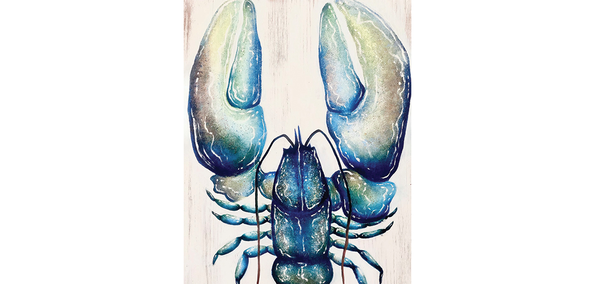
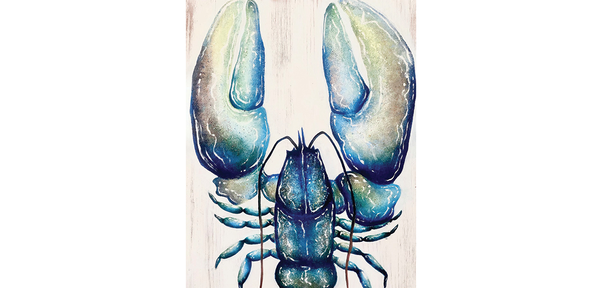

Crustacean Acrylic Paintings
Every summer I go to Devon which is a tradition in my family. The last two summer’s I have been inspired by the sea life and painted two acrylic paintings of crustaceans.
I turned discarded pieces of wood into canvases for my artwork. I then sanded them down and distressing with white paint. Using acrylic paint and a sponge, I created textured layers that add depth and character to the paintings. With a paintbrush, I added highlights to enhance the details and to emphasise the forms.
 
